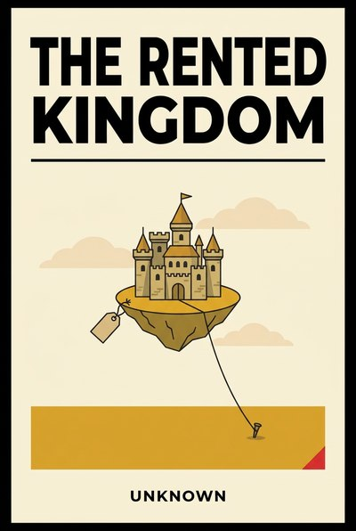

Library › Business & Startups
The Rented Kingdom — Summary & Key Lessons

Empires built on platforms you do not own, and the quiet art of owning the ground you stand on.
📖 OPEN THE FULL INTERACTIVE BREAKDOWN →🌐 Read it in Hindi, Hinglish, Gujarati, Tamil & 22 more languages — free, with audio.
💡 The Big Idea
An entire generation of businesses lives on land it does not own: storefronts inside marketplaces, audiences inside feeds, revenue inside app stores, logistics inside one carrier. The rent is invisible while the sun shines and total when terms change, and terms always change, usually at midnight, usually with an email nobody reads. This book is the owner's manual for rented kingdoms: how to price platform risk, how to convert reach into relationships, why the algorithm is a weather system and not a strategy, and how to build the lifeboat before the storm. Its cases are the public record of businesses that soared on platforms and learned the difference between traffic and equity; its doctrine is one sentence long, repeated ten ways: the kingdom you own is smaller, slower and yours, and it is the only one that compounds for you.
🧠 The 11 Key Lessons
Lesson 1: The Landlord Sets the Rent Eventually
Chapter 1: The Terms Always Change
Platforms subsidize demand while they need you and monetize you once you need them; this is not betrayal, it is the business model working as written. The commission rises, the organic reach falls, the featured slot becomes an auction, and none of it is personal. Any business whose margin depends on a landlord's current mood is a business with a hidden countdown it has not read.
📖 Example: Marketplace sellers who watched commissions climb after building on the platform, app publishers repriced by store fee changes, and publishers whose Facebook-referral empires evaporated in one algorithm memo all met the same clause: the terms always change. Read the full example →
⚡ Do this: Compute your landlord concentration: the share of revenue, traffic and customer data that flows through each platform you do not control. Write the number down where your next growth decision will see it.
Lesson 2: Reach Is Rented, Relationships Are Owned
Chapter 2: The Email List Is the Deed
Followers are entries in someone else's database; an email list, a phone number with consent, a direct purchase habit, is a deed to the relationship itself. The conversion from rented reach to owned relationship is the single most valuable migration a platform-era business can run, and it is measured in boring instruments: lists, logins, repeat purchases, saved details.
📖 Example: Creators who owned lists sold through algorithm blackouts that erased follower-only peers, and D2C brands that pushed loyalty logins at unboxing built direct channels that survived ad-cost quadrupling almost untouched. Read the full example →
⚡ Do this: Move ten percent of your reach to an owned channel this quarter: a list, a login, an app relationship. Offer something real in exchange, and measure the migration rate monthly.
Lesson 3: The Algorithm Is a Weather System
Chapter 3: Strategy Is Not the Sky
Distribution algorithms optimize for the platform's goals on the platform's schedule, and they change without notice or appeal. Businesses that build on algorithmic forecasts are farmers betting the farm on next year's exact rainfall. The sane posture is agricultural: diversify fields, keep seed stock, and treat every viral season as windfall to be banked, not as the new climate.
📖 Example: Every major feed redesign in a decade created instant casualties and instant beneficiaries among publishers and sellers, and the survivors were those who banked windfall traffic into owned assets during the good weather. Read the full example →
⚡ Do this: Set a windfall rule today: when any platform sends you an anomalous spike, a fixed percentage of the gains is banked into owned channels within 30 days, automatically, no debate.
Lesson 4: Data Portability Is Your Escape Hatch
Chapter 4: Own the Customer Graph
The most valuable asset a platform partner generates is usually the customer graph: who buys, what they return for, how they respond. If that graph lives only inside the platform, you are a guest in your own business. Exporting, syncing and legally securing your customer data turns the platform from a walled city into a market stall, and changes every future negotiation.
📖 Example: Merchants who synced marketplace buyers into their own CRM migrated channels at will during fee shocks, while graph-less competitors discovered their 'customer base' was legally the platform's mailing list. Read the full example →
⚡ Do this: Audit where your customer data physically lives and what you may export under each platform's terms. Build one automated sync to a system you control this month.
Lesson 5: Terms Change at Midnight
Chapter 5: The Independence Plan
Platform dependence does not require pessimism, only arithmetic: what happens to revenue, fulfillment and cash in the ninety days after your worst platform event? A written independence plan, the channels that could carry load, the costs of switching, the trigger that starts the migration, converts catastrophe into a project with a name and a budget.
📖 Example: API pricing shocks, deplatformings, marketplace suspensions and carrier-capacity repricings each ended businesses that were operationally perfect and structurally singular; the survivors had rehearsed the ninety days on paper first. Read the full example →
⚡ Do this: Write the one-page independence plan this month: the trigger event, the ninety-day migration sequence, the monthly cost of standby channels. Review it with the leadership team every quarter.
Lesson 6: Marry the Marketplace, Date the Channel
Chapter 6: The Portfolio of Channels
Channels deserve portfolio logic, not monogamy: each has yield, cost, risk and a correlation with the others, and the mix should be rebalanced like any portfolio. The marketplace that is your best channel this year is also your most correlated risk; the owned channel with humble numbers may be the only uncorrelated asset you hold. Date widely; marry deliberately.
📖 Example: Brands that kept a strict ceiling on any single channel's share sailed through platform repricings that bankrupted single-channel peers, and the discipline was boring: targets per channel, rebalanced quarterly, no exceptions for favorites. Read the full example →
⚡ Do this: Set revenue share targets per channel for the year, with a hard ceiling for any platform you do not control. Rebalance quarterly against the targets, and log every exception you are tempted to make.
Lesson 7: The House Wins on Payments Too
Chapter 7: The Fee Stack
Platform costs are quoted one fee and charged in five: commission, payment processing, fulfillment, advertising to stay visible, returns. The stack, not the sticker, is your real rent, and it drifts upward in increments too small to trigger a meeting. Auditing the full stack annually, in rupees and as a percent of revenue, is the difference between a channel and a landlord.
📖 Example: Every marketplace seller who computed the all-in take was surprised by it, and the modern app-store fee debates made public what merchants always knew: the stack is the rate, and the rate is a negotiation you forgot you were having. Read the full example →
⚡ Do this: Run the full fee-stack audit this week for your biggest platform: every fee, every percent, annualized in money. Put the total on one line next to your rent. Decide if it still looks like a partnership.
Lesson 8: Own the Reason They Come Back
Chapter 8: Brand Gravity
On any platform, the seller with gravity pays less rent for the same traffic: customers who search your name, wait for your drops and forgive your mistakes are demand that no algorithm can repossess. Gravity is manufactured through repeatable identity, product obsession and service moments, and it is the only advertising that compounds while you sleep.
📖 Example: The direct brands that survived platform ad-cost inflation were the ones customers searched for by name, and on every marketplace the top sellers convert search-to-sale at multiples of the commodity sellers beside them for the same slots. Read the full example →
⚡ Do this: Instrument one gravity metric this month: branded search volume, direct traffic, or repeat-purchase rate. Grow it deliberately, with the same budget energy you give to rented reach.
Lesson 9: Build the Lifeboat Before the Storm
Chapter 9: The Minimal Direct Channel
A minimal owned channel, a simple site, a working checkout, a payment rail, a fulfillment fallback, costs little in sunshine and is priceless in the storm. Its purpose is not to beat the platform; it is to keep the promise to customers when the platform cannot, and to prove, in real orders, that your business exists independently of any landlord's permission.
📖 Example: Businesses that kept small, unloved direct stores through fat years switched them on during platform outages, policy shocks and fee repricings, and those first disaster orders funded the full migration that followed. Read the full example →
⚡ Do this: Stand up or refresh the minimal direct channel this quarter: live checkout, real payments, one product, tested end to end. Then leave it switched on, humble and warm.
Lesson 10: Partnerships Need Exits Too
Chapter 10: Read the Exit Clause
Every platform relationship has an ending, written or improvised, and the quality of the ending is priced into the risk. Data portability on exit, non-compete clauses, notice periods, holdbacks and what happens to your reviews and ratings when you leave: these are business terms, not fine print, and they should be read before the marriage, not during the divorce.
📖 Example: Sellers who negotiated export rights and notice terms up front migrated cleanly during fee shocks, while others discovered their decade of reviews belonged to the venue and their customer messages were not theirs to take. Read the full example →
⚡ Do this: Re-read your top platform contract this month with one question: how do we leave? Mark the exit terms, fix the worst one at the next renewal, and calendar the reading annually.
Lesson 11: The Kingdom You Own Is Small but Yours
Chapter 11: Compounding on Owned Ground
Owned channels grow slower, cost more per customer and never trend; they also compound, survive storms and pay their dividends to you. The platform era's final lesson is portfolio honesty: rent is for reach, ownership is for equity, and the businesses that lasted used rented kingdoms to buy owned ground, acre by boring acre, every single quarter.
📖 Example: Every durable direct brand, community business and subscription institution of the platform era followed the same arc: born on rented reach, disciplined about banking it, and eventually compounders on ground no algorithm could repossess. Read the full example →
⚡ Do this: Decide your owned-ground target today: the share of revenue that must come from channels you control within two years. Write it on the wall, and let this quarter's growth budget start paying for the deed.
✅ 5-Step Action Plan
- Compute and post your landlord concentration; set a hard ceiling per platform.
- Migrate ten percent of reach to owned channels this quarter; track it monthly.
- Apply the windfall rule: bank anomalous spikes into owned assets in 30 days.
- Run the full fee-stack audit on your biggest platform this week.
- Write the one-page independence plan and review it with leadership quarterly.
⚠️ When This Doesn't Work
This is a TheSmallBook Original, published under the name Unknown. The platform behaviors described (fee repricings, reach changes, terms updates) reflect well-documented public episodes across marketplaces, app stores and social platforms; no platform is named as villain, because the mechanics, not the malice, are the lesson. Terms vary by platform and jurisdiction; read your own contracts, then write your own plan.
💀 The Graveyard Proves It
🧸 Toys "R" Us — Outsourced Its Future to Amazon, Then Drowned in Debt. Burn: 800 stores, 33,000 jobs. Read the full case study →
💬 Best Quotes from The Rented Kingdom
- “Reach is rented. Relationships are owned.”
- “The algorithm is weather, not architecture. Nobody's strategy should be the sky.”
- “Build the lifeboat in sunshine; it floats badly in a storm.”
Interactive version: mark lessons as read, listen in your language, share quote cards.